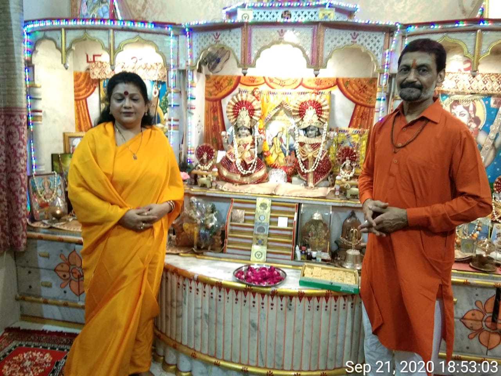
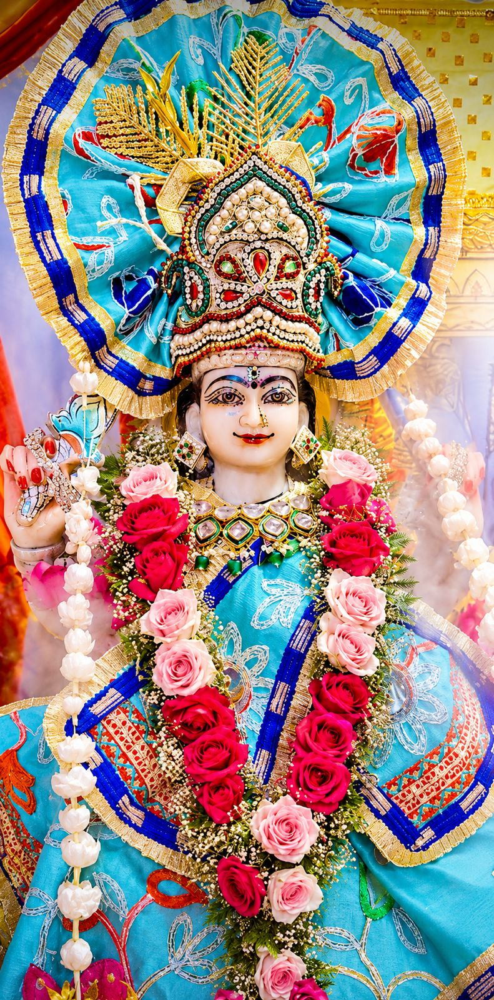
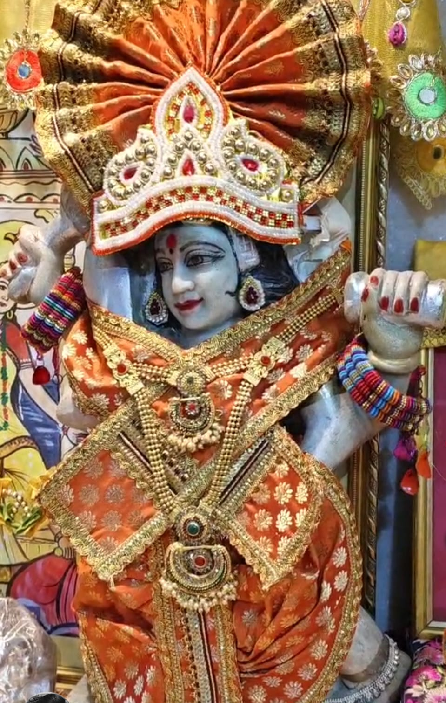

A Sacred Path of Devotion, Meditation & Spiritual Awakening
🕉️ आरती प्रत्येक रविवार दोपहर 3:00 बजे
🕉️ प्रत्येक गुरुवार शाम 7:30 बजे
Facebook Live पर आरती देखने के लिए "Watch Aarti Live" बटन पर क्लिक करें।
Siddh Yog Shakti Darbar Bareilly is a sacred spiritual center dedicated to devotion, meditation, spiritual awakening and service to humanity.
जीवन सरल है मनुष्य ने जटिल बना लिया है और मकड़ी के जाले की भांति इसमे उलझ गया इसको कैसे प्रेमपूर्ण और रसमय बनाएं -आइये जानें सिद्धयोगी गोविन्द् जी से - जो महायोगी महाअवतार बाबा जी के आदेश से संसार को नई शक्ति देने आये हैं,समाज में व्याप्त अज्ञान को मिटाना ही जिनका उद्देश्य है,लोगों को अभी छला जा रहा है,शॉर्टकट से अध्यात्म चलाने वाले बढ़ रहे हैं,जिन्हे खुद आत्मबोध नहीं हुआ वो भी आत्मज्ञानी बन सब कुछ उलट पलट बता रहे हैं...परम उद्धारक संत श्री गोविन्दजी का मानना है कि ज्ञान की चर्चा में ही उम्र नही गंवानी है,कैसे गृहस्थ में सब जिम्मेदारियों को निभाते हुए योगी बन जाएं और आत्मज्ञान हो,शक्ति प्रदान कर अनुभव कराना, सुखमय जीवन प्रदान करना गुरुदेव का विशेष कौशल है
सत्संग, ध्यान, साधना एवं आध्यात्मिक वीडियो देखने के लिए हमारे YouTube चैनल को Subscribe करें।
▶ Visit YouTube Channel
Sacred spiritual gathering place.
Devotees attending spiritual discourse.

Spiritual Event & Devotional Prayers.

Inner Peace & Spiritual Awakening.
88, Silver Estate, Near Mahanagar,
Pilibhit Bypass Road,
Bareilly, Uttar Pradesh 243006
Total Devotees Visited
हमारे नवीनतम कार्यक्रम, फोटो, सत्संग एवं आध्यात्मिक अपडेट
प्रत्येक रविवार
दोपहर 12:00 बजे से 3:00 बजे तक
विशेष ध्यान एवं आध्यात्मिक मार्गदर्शन
प्रत्येक बृहस्पतिवार
शाम 6:00 बजे से 7:30 बजे तक
विशेष साधना एवं आध्यात्मिक शक्ति जागरण